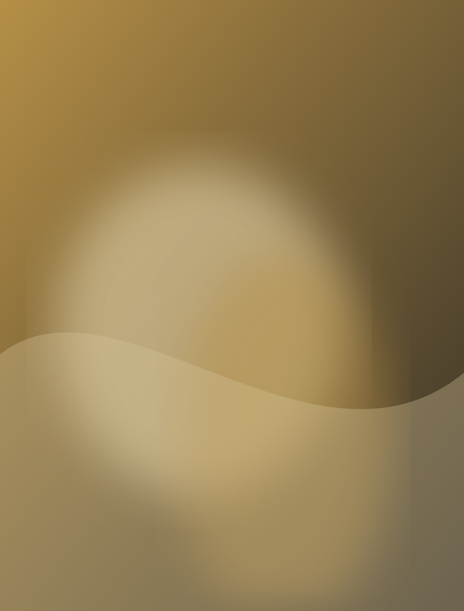
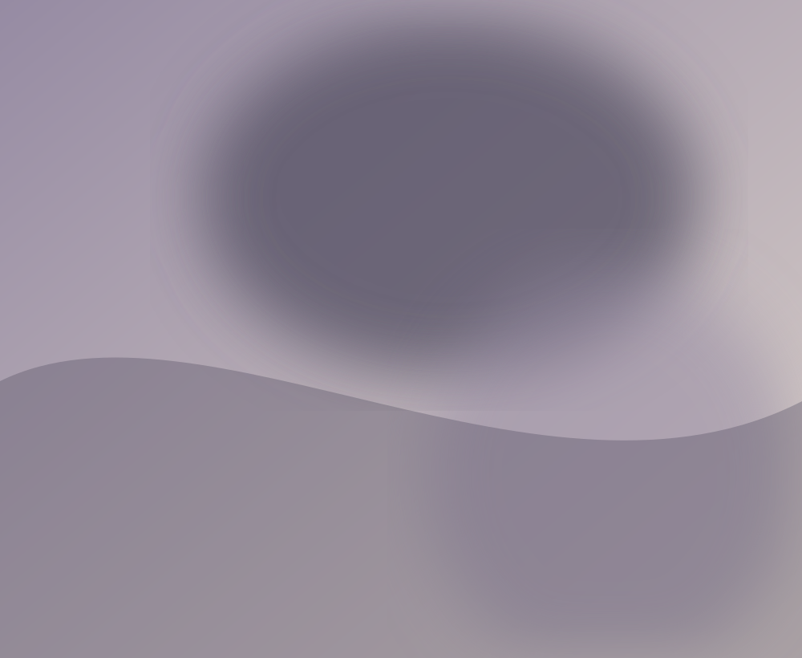
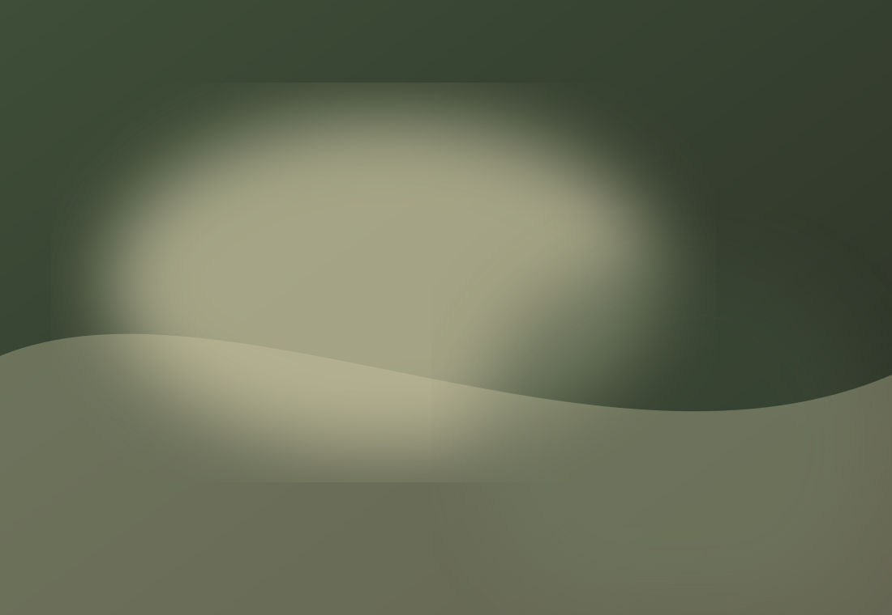

Untitled Field
2025
Oil and pigment on canvas
Selected works that consider memory, displacement, and the unstable boundaries between interior and landscape.
Untitled Field
2025
Oil and pigment on canvas

Where the Dust Settles
2024
Oil, wax, and graphite on linen

Soft Boundary
2025
Acrylic and chalk on canvas
Red Memory
2023
Oil and charcoal on canvas

A Garden After Rain
2024
Oil on linen